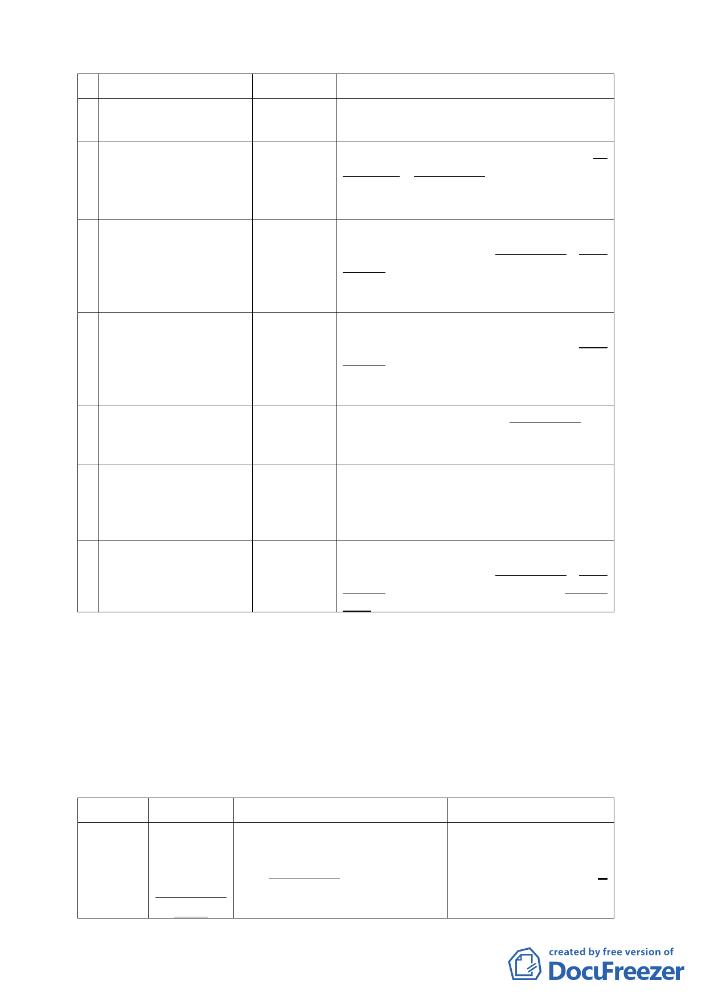

案 名召集人小 組 成 員
1 變更臺北市辛亥國、高 陳委員武正 張委員桂林、洪委員鴻智、李委員素馨、倪
中用地主要計畫案
委員世標、陳委員晉源
2 臺北市中華電信股份 邱委員大展 陳委員武正、吳委員清輝、洪委員寶川、吳
有限公司 32 處基地都
委員光庭、羅孝賢委員
市計畫通盤檢討（主要
計畫及細部計畫）案
3 變更臺北市大同區延 吳委員清輝 洪委員寶川、洪委員鴻智、郭委員瓊瑩、陳
平段一小段 710 地號等
委員武正、李委員素馨、邊委員泰明、吳委
13 筆土地商業區為特
員光庭、羅委員孝賢
定專用區主要計畫暨
擬定細部計畫案
4 變更臺北市內湖區蘆 陳委員武正 邊委員泰明、郭委員瓊瑩、吳委員清輝、洪
洲里附近部分工業區
委員鴻智、倪委員世標、陳雄文委員、羅孝
為保護區、住宅區及道
賢委員
路用地主要計畫案暨
擬定細部計畫案
5 劃定臺北市大安區龍 吳委員清輝 陳委員武正、黃委員麗玲、簡委員伯殷、倪
泉段一小段 421-1 地號
委員世標
等 8 筆土地為更新單元
6 變更臺北市文化體育
園區北側第三種工業
區為道路用地細部計
畫案
陳委員武正 吳委員清輝、李委員素馨、洪委員鴻智、黃
委員麗玲、林委員楨家、吳委員光庭、沈委
員英標、邱委員大展、羅委員孝賢
7 變更臺北市南港區中 張委員桂林 吳委員清輝、邊委員泰明、郭委員瓊瑩、陳
南段一小段 446 地號等
委員武正、洪委員鴻智、沈委員英標、簡委
230 筆機關用地為特定
員伯殷、邱委員大展、倪委員世標、羅孝賢
專用區主要計畫案
委員
三、另針對「促進都市再生 2010 年臺北好好」系列一開發計畫案，
除大彎北段申請案件將併同該地區計畫案先行召開座談會
外，比照去年度之申請案件先交由專案小組詳細審查後再提
送大會審議方式辦理。
臺北好好
看---科
技軸帶組
召集人
洪委員鴻智
（一召）
陳委員武正
（二召）
小組成員
張桂林委員、陳武正委員、吳委
員清輝、郭委員瓊瑩、李委員素
馨、簡委員伯殷、羅孝賢委員、
陳雄文委員、倪世標委員
案名
「修訂臺北市基隆河（中
山橋至成美橋段）附近地
區細部計畫」大彎北段 8
個申請案，於 99 年 1 月
21 日公展完成
-3-